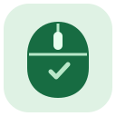
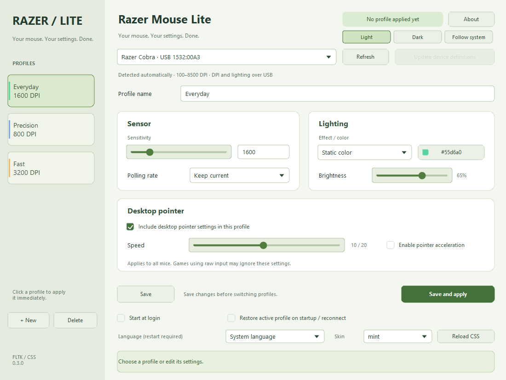
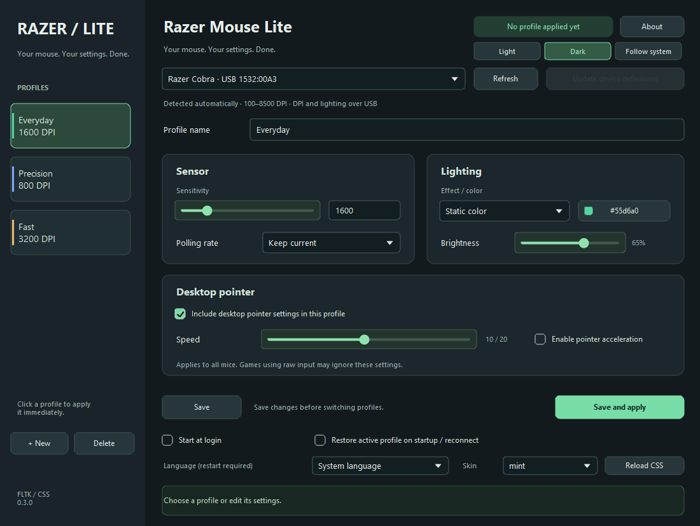

Make it feel right
Set sensitivity, choose a supported polling rate and adjust desktop pointer settings where your operating system permits.

Razer Mouse LiteYour mouse. Your settings. Done.
A few settings.
Then back to work.
A focused, unofficial settings app for supported Razer USB mice. Set your DPI, choose a color and keep your profiles on your own computer.


Set sensitivity, choose a supported polling rate and adjust desktop pointer settings where your operating system permits.
Choose a static color and brightness, turn lighting off, or keep the mouse's current lighting.
Save local profiles and apply them with a click. Use the tray menu to switch without reopening the settings window.
From USB to your settings
Starting at login and restoring your last profile are separate options. You choose whether either happens.
Explore the settings →Plug in a supported USB mouse. The app detects it automatically.
Create one or select a saved profile, then adjust the settings you need.
Apply it now, or use Save to keep your edits for later.
Download
Installer or portable ZIP. Extract the whole portable folder before running the app.
Windows downloads ↗Separate DEB packages for Ubuntu 24.04 and Debian 13. Choose the package for your distribution.
Linux downloads ↗Packages and release notes are on GitHub. See the Linux setup guide for device permissions and tray dependencies.
Device support
The wired Razer Cobra is the hardware reference tested on Windows. Other mice have device definitions, but a database entry does not guarantee every feature on every model. Bluetooth is not supported.
Physical Linux mouse testing is still needed in addition to CI. The device support guide explains the current limits and what to include in an issue report.
A closer look
Profiles, startup behavior, skins and device support. Everything stays documented alongside the application.